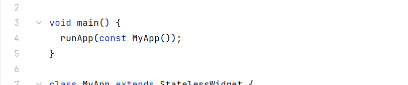
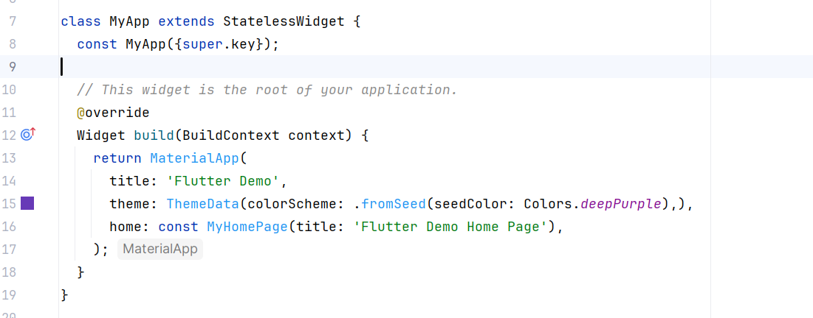

If you read the message, it says that value is not between minimum 0 and maximum 1. Of course, because the _incrementCounter function has: _counter++.
If you read the message, it says that value is not between minimum 0 and maximum 1. Of course, because the _incrementCounter function has: _counter++.A Flutter application starts with the main() function:

MyApp is a subclass of StatelessWidget, which is a class that can be drawn on a screen.
The StatelessWidget class has a build() function, which returns how this class should look on screen. This Build function returns a MaterialApp( ) object, which is like an HTML page, with a Title, Body, and Theme:

As you see, the Body is set to MyHomePage, which is below that in the file.
In modern user interface programming, the screen will only redraw when a variable has changed. If none of the variables have changed, then there is no need to redraw the screen.
In order to indicate that we are changing a variable and we want the screen to update, we use the setState() function.
void setNewValue(double value)
{
setState(() {
_counter = value;
});
}
Here, we are updating the _counter variable to a new value. By doing this, Flutter will optimize the redraw so that it only updates widgets that actually use the _counter variable. Any widget that uses numClicks will get updated.
If you try to click the + button, you will get a crash:
If you read the message, it says that value is not between minimum 0 and maximum 1. Of course, because the _incrementCounter function has: _counter++.
Let's set the minimum and maximum values of the slider to be 0 and 100:
Slider(value:_counter, max:100.0, onChanged: setNewValue, min:0.0 )
Remember, the parameters can be in any order as long as you put the name in front of the value. If you want to see
what parameters are in the function, just hover your mouse over the function name:  Remember, the code is hot-swapping so we don't need to recompile. Now try using the slider, and clicking the + button. When you click the + button, you should see the slider move. That's because the _incrementCounter
function uses setState() to modify the variable _counter. Any widget that uses _counter will be redrawn.
Remember, the code is hot-swapping so we don't need to recompile. Now try using the slider, and clicking the + button. When you click the + button, you should see the slider move. That's because the _incrementCounter
function uses setState() to modify the variable _counter. Any widget that uses _counter will be redrawn.
Let's now just make sure that the app doesn't crash when we try to increment
past the maximum value of 100. Modify the _incrementCounter() function so that it only increments if _counter is less than 99.

You can declare variables to hold values. To modify these variables, you can use Widgets that let the user click or drag to update these values. The Widgets normally have a parameter that specifies which function to call when the user clicks or changes the widget. This function can update the variables however it must be done within setState() if you want the Widgets to react with the new updated values.